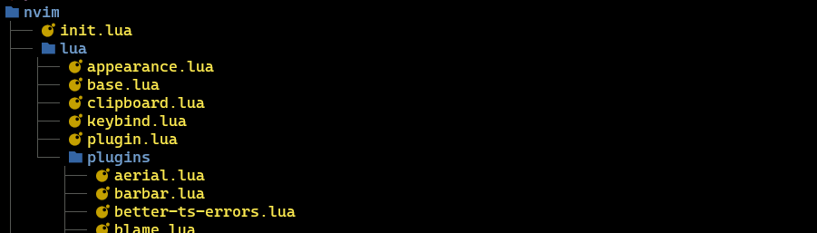

Don't think. Feel. (考えるな。感じろ。) It's like a finger pointing at the moon. (これは月を指で指すようなものだ。) Don't concentrate on the finger, or you will miss all that heavenly glory. (指に集中するな。さもないと栄光を見失うぞ。) 映画『燃えよドラゴン』 リーの台詞
Don't think. Feel. (考えるな。感じろ。)
It's like a finger pointing at the moon. (これは月を指で指すようなものだ。)
Don't concentrate on the finger, or you will miss all that heavenly glory. (指に集中するな。さもないと栄光を見失うぞ。) 映画『燃えよドラゴン』 リーの台詞
# before version: "3" services: minio: image: quay.io/minio/minio ports: - 9000:9000 - 9001:9001 environment: minio_root_user: user minio_root_password: password command: server /data
# after version: "3" services: minio: image: quay.io/minio/minio ports: - 9000:9000 - 9001:9001 environment: MINIO_ROOT_USER: user MINIO_ROOT_PASSWORD: password command: server /data
無理だと思わないことが一番大事だと思います。 無理だと思ったら終わりです。 大谷翔平の名言：無理だと思わないことが一番大事だと思います。無理だと思ったら終わりです。
努力は必ず報われる。 もし報われない努力があるのならば、それはまだ努力と呼べない。 王貞治の名言：努力は必ず報われる。もし報われない努力があるのならば、それはまだ努力と呼べない。
<- 今回はいきなりココを目指す
mise use -g neovim
.zshrc
# vimで起動したければ alias vim=nvim

vim.opt.swapfile = false -- swapfileを作成しない vim.opt.number = true -- 行番号の表示 vim.opt.clipboard = "unnamedplus" -- クリップボードとヤンクの同期 vim.opt.tabstop = 2 -- タブの文字数指定 -- 好みで2 or 4 vim.opt.shiftwidth = 0 -- インデントの幅 -- 0でtabstopの値(2)を使う vim.opt.expandtab = true -- タブをスペースとして入力する vim.opt.ignorecase = true -- 検索文字列が小文字の場合は大文字小文字を区別なく検索する vim.opt.smartcase = true -- 検索時に大文字を含んでいたら大/小を区別 vim.opt.cursorline = true -- カーソル行の表示を強調 -- Yankした範囲を反転色でハイライト vim.api.nvim_set_hl(0, "YankHighlight", { reverse = true }) vim.api.nvim_create_autocmd("TextYankPost", { pattern = "*", callback = function() vim.highlight.on_yank({ higroup = "YankHighlight", timeout = 200 }) end, })
仕事だったら『所属』『代表プロダクト』『入社年』などを入れる